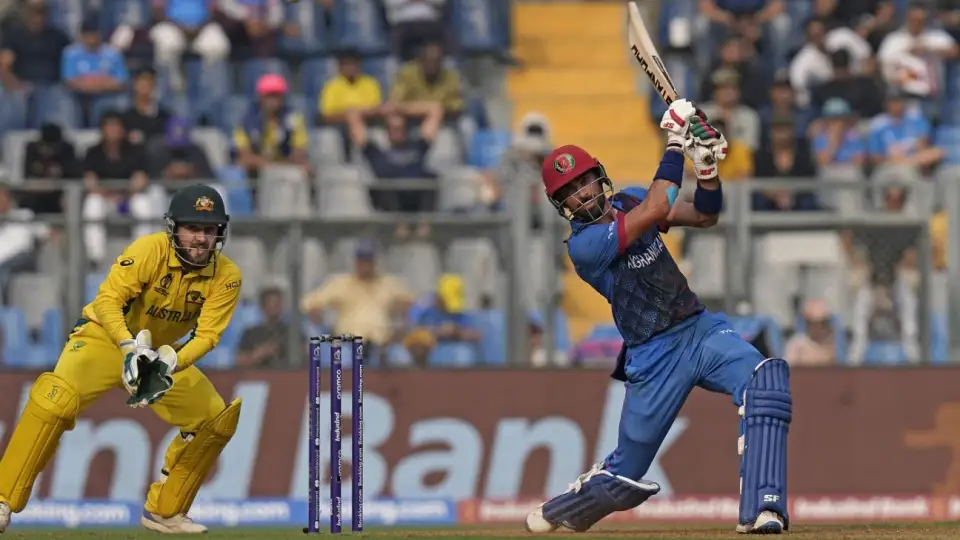
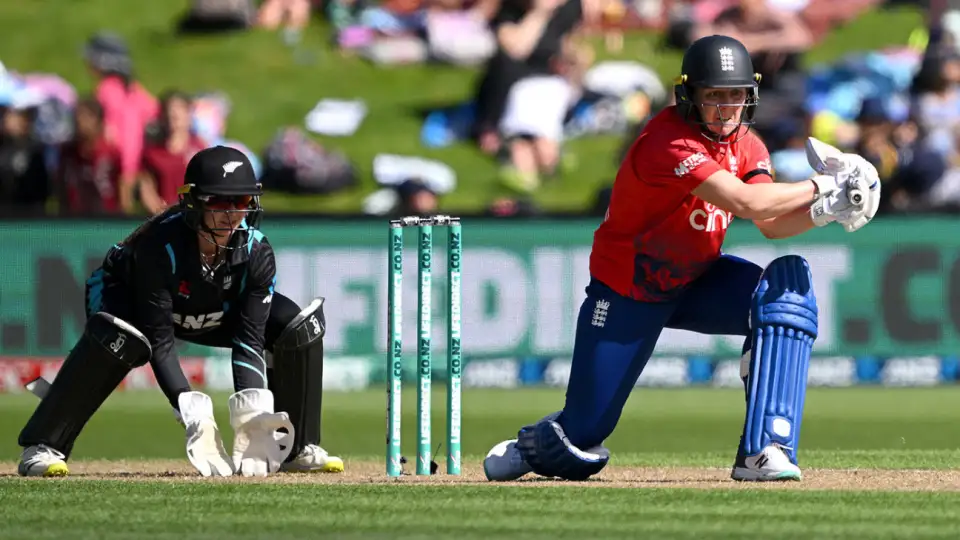
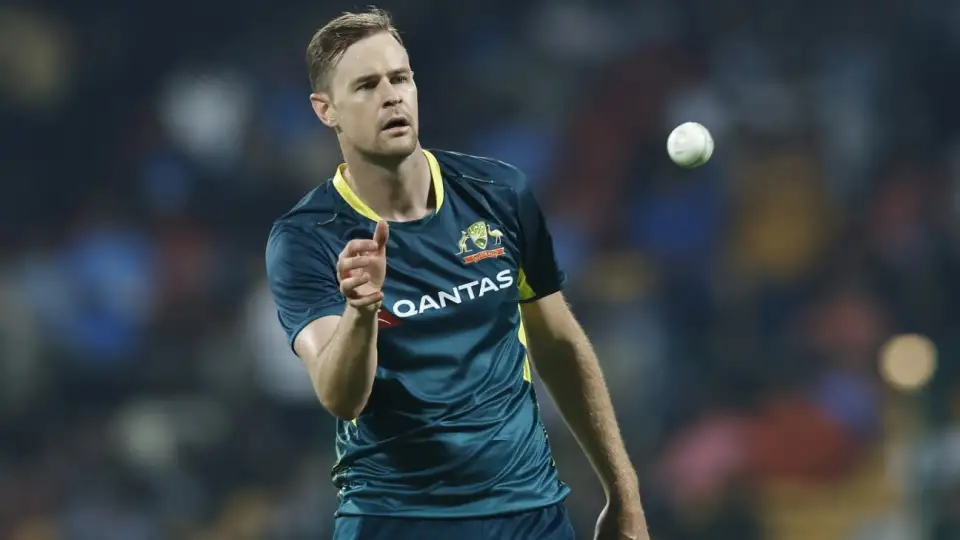
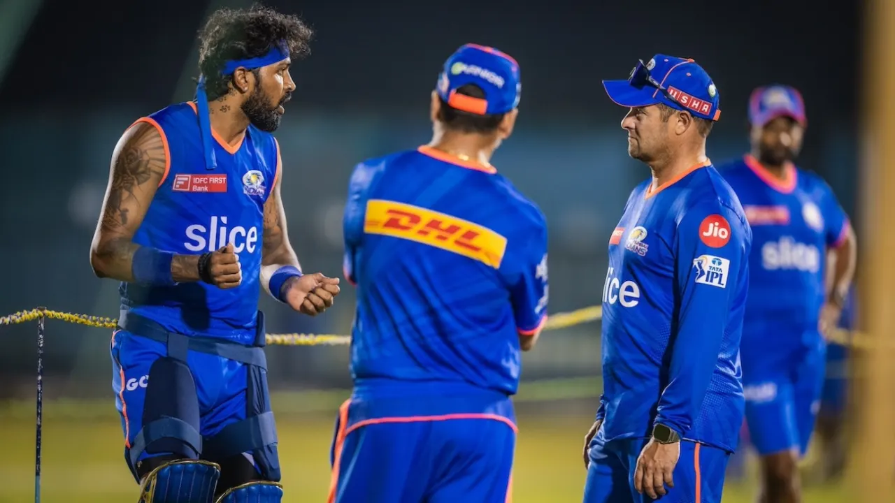
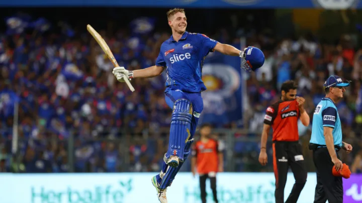

Hasaranga comes out of Test retirement for Bangladesh series

Wanindu Hasaranga has come out of Test retirement and been named in Sri Lanka's 17-man squad for the two-Test series against Bangladesh, starting Friday. Sri Lanka have also recalled seamer Lahiru Kumara and included uncapped offspinner Nishan Peiris in the contingent.
CA postpones T20I series against Afghanistan due to 'human rights' issues

Cricket Australia has chosen to postpone a scheduled three-match T20I series with Afghanistan due to "a marked deterioration in human rights for women and girls" in the country following consultation with the Australian government.
Australia were scheduled to play three matches against Afghanistan at a neutral venue in August as part of the current men's Future Tours Program. But CA opted to postpone the series due to human rights issues just as they had done for the first Test match between the two nations in 2021 and a proposed ODI series in March 2023.
Knight leads from the front as England take opening T20I

In a game of two captains' innings, it was Heather Knight who came out victorious as England took the opening T20I of the five-match series in Dunedin by 27 runs.
Knight, who opted out of the WPL to lead England from the start of this tour, put together a superbly-paced 63 off 39 balls to steer the visitors to 160 for 4 with handy contributions from Sophia Dunkley and Maia Bouchier
Behrendorff's T20 World Cup hopes dented after suffering broken leg in freak training accident

Jason Behrendorff's hopes of sneaking into Australia's T20 World Cup squad have suffered a major blow after he was ruled out of the IPL with a broken leg following a freakish training accident last week.
Behrendorff was batting in the nets at the WACA ground last Thursday ahead of departing to India to play in the IPL with Mumbai Indians when he suffered a fractured left fibula after a ball missed his pad and struck him flush just above the left anklel
'I've been fit since January' - Hardik confirms he will bowl in IPL 2024

Hardik Pandya has declared himself fit to bowl as he returns to captain Mumbai Indians in IPL 2024. The allrounder said he has been fit since the start of this year, after suffering an ankle injury during the 2023 ODI World Cup that ruled him out of all cricket since October.
Australians at the IPL: Green's World Cup bid, Starc returns, Langer at Lucknow

Cameron Green and Spencer Johnson are at the top of the list with most to gain over the next few weeks. Green was deliberately allowed to focus on red-ball cricket ahead of the New Zealand Test series rather than playing the T20Is and the result was compelling with his 174 not out in Wellington. Part of the selectors' thinking was they knew he would have a full IPL to work on his T20 game.